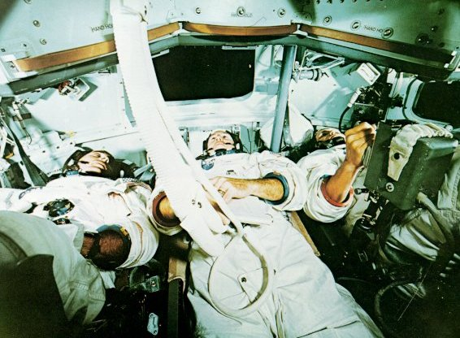
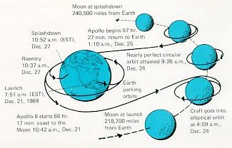
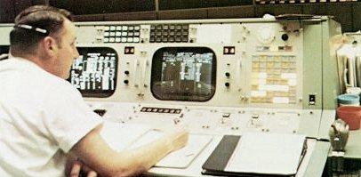
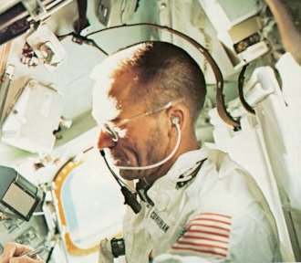
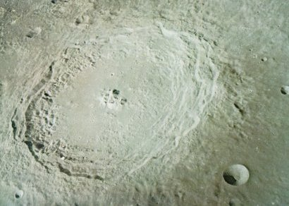
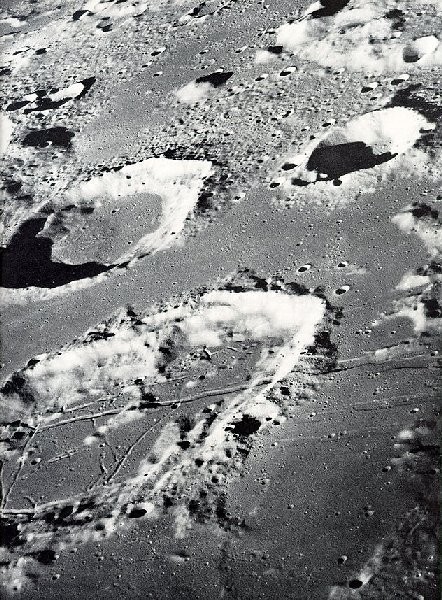

|  |
| Intently watching the dials above them, the crew of Apollo 8, Anders , Lovell, Borman, left to right, rehearse for their lunar orbit mission inside a simulator at the Kennedy Space Center. Simulation was a central feature of the training given flight crews and mission controllers. |
|  | Like a whirling dervish, the path of Apollo 8 about the Earth and Moon spanned seven days and well over half a million miles. Ten lunar revolutions, at distances as close as 60 miles, were made. Translunar trip takes about 20 percent longer than the return trip because going out one has to overcome the stronger gravity of the Earth but can capitalize on it coming back. Not shown is the solar orbit trajectory taken by the burned S-IVB stage. |
|  |
| Brightly lit panel lights and screens confront Green Team Flight Director for Apollo 8, Cliff Charlesworth, at his console in the Mission Control Room in Houston. The radio signal between here and the Moon took three seconds roundtrip. |
|  |
| Walt Cunningham, lunar module pilot on Apollo 7 (which carried no LM), makes notes while a spare film magazine floats weightlessly a few inches above his pen. To "park" something in space, it had to be left with zero motion. |
|  |
| Terraced inner walls lead from the rim of the crater Langrenus down to the smooth crater floor, broken by some central peaks. Langrenus is about 85 miles in diameter and its smooth, worn walls suggest that it is fairly old. The photo was taken from an altitude of some 150 miles. |
|  | Slashing across the floor of the crater Goclenius, which is about 40 miles in diameter, are strange trenches called rilles. One rille extends over the entire crater floor, across the central peak, and continues up over the rim and out along the surrounding mare. This is only part of an Apollo 8 telephoto negative. |